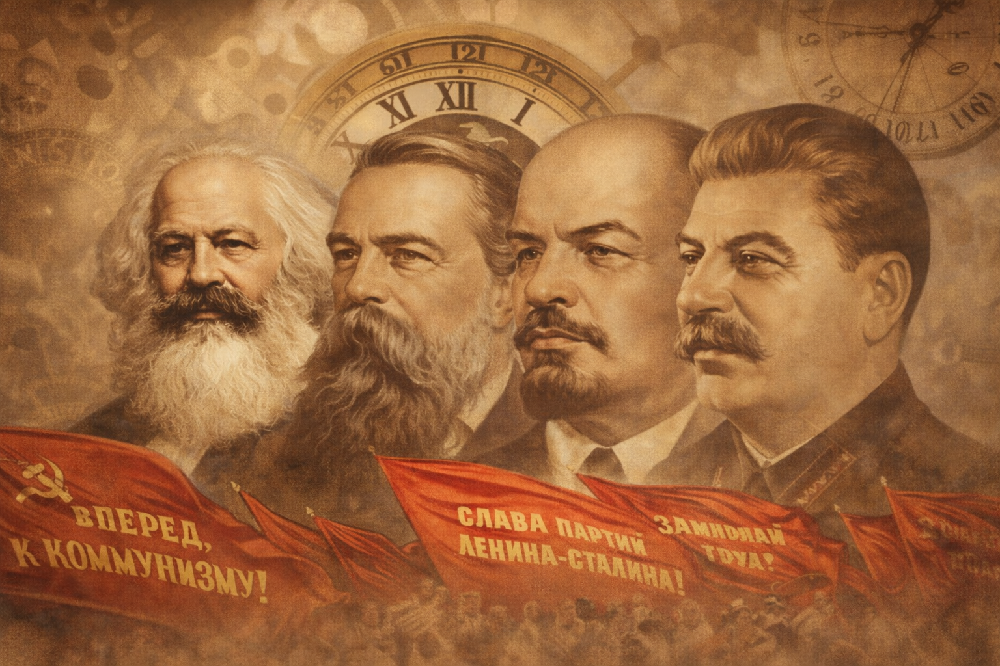

Revolução Francesa
O colapso do Antigo Regime, a defesa de liberdade, igualdade e cidadania e o início de uma nova era política.
Saiba maisGrandes acontecimentos da história mundial e seus ecos no Brasil.
O Atlas dos Séculos é um site dedicado a acontecimentos que transformaram o mundo e deixaram marcas profundas também na história do Brasil. Aqui, revoluções, guerras, crises e mudanças políticas são apresentadas como partes de um mesmo processo histórico.
A história do Brasil não aconteceu separada da história mundial. Revoluções, guerras, disputas ideológicas e transformações econômicas alteraram o rumo da humanidade e também influenciaram diretamente a formação política e social brasileira.
Explorar períodos históricos| Período | Acontecimento | Impacto principal |
|---|---|---|
| 1789 | Revolução Francesa | Queda do Antigo Regime |
| 1803 | Guerras Napoleonicas | Reorganização da Europa e difusão dos ideais da Revolução Francesa. |
| 1914 | Primeira Guerra Mundial | Transformação da Europa e impacto no Brasil |
| 1922–1939 | Ascensão do Fascismo e do Nazismo | Fortalecimento do autoritarismo, do militarismo e da perseguição racial. |
| 1939 | Segunda Guerra Mundial | Transformação global e impacto no Brasil |
| 1917 | Revolução Russa | Novo projeto político |
| 1930 | Era Vargas | Centralização e industrialização |
| 1945 | Guerra Fria | Polarização mundial |
| 1964 | Ditadura Militar | Ruptura democrática no Brasil |
O colapso do Antigo Regime, a defesa de liberdade, igualdade e cidadania e o início de uma nova era política.
Saiba mais
A expansão de Napoleão remodelou a Europa e gerou impactos que ultrapassaram suas fronteiras, alcançando também o mundo atlântico.
Saiba mais
O conflito que transformou a Europa e teve repercussões globais, incluindo o Brasil, que participou com a Força Expedicionária Brasileira.
Saiba mais
A queda do czarismo e o surgimento de um novo projeto político alteraram profundamente o século XX.
Saiba mais
O crescimento de regimes autoritários e totalitários na Europa, com consequências devastadoras para o mundo e para o Brasil.
Saiba mais
O maior conflito do século XX redefiniu fronteiras, economias e relações de poder em escala global.
Saiba mais
A centralização do poder e a industrialização do Brasil durante o período varguista.
Saiba mais
A disputa entre potências influenciou governos, golpes, alianças e conflitos em várias regiões do mundo.
Saiba mais
Da Era Vargas à Ditadura Militar, o Brasil viveu transformações políticas, econômicas e sociais conectadas ao cenário internacional.
Saiba mais


Quer enviar uma sugestão ou comentário sobre o site?
Ir para a página de contato